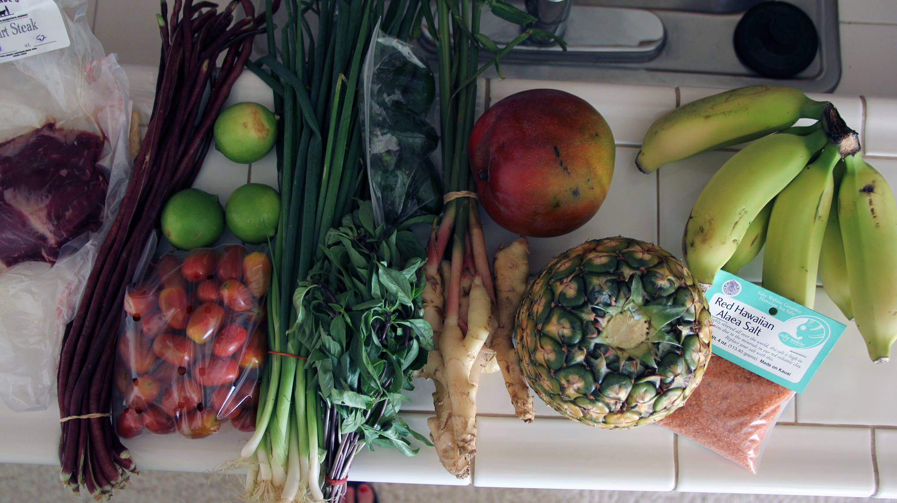

Recently I’ve found that I’m interested in gardening. Both my mom and my aunt have very green thumbs. I’ve always liked having houseplants, but I had to rein in the number of funky, cool plants when I discovered that my cat enjoys eating them. It turns out that a lot of funky, cool plants aren’t safe for pets to eat. Go figure. So over the years I’ve had to stick with spider plants that Zoe occasionally gives a hair cut, and everybody stays alive.
Now, I’m living in a house (not an apartment) for the first time since leaving the home I grew up in, and I want to take advantage of the yard, the space, and the sun.
I discovered the farmer’s market, and specifically CSA’s right around the time that Nick and I first met. We were living the in Piedmont in North Carolina, where the growing season is just epically long, and we got a ridiculous amount of food from a local farm every week. Since moving to the Pacific Northwest, we have seen that while people who live here are gaga over the new trend of growing their own food, the growing season is significantly shorter here. We tracked down a CSA from a wonderful farm (Persephone Farm) that we get from mid-spring through the fall. But the weekly haul is less than what we are used to. Like, significantly less. And that’s ok! BUT now my curiosity about gardening has taken a turn, and I want to supplement our CSA with ultralocal produce…from my own backyard.
A friend of mine gave me a comprehensive book about how to start a garden, titled Food Grown Right, In Your Backyard by Colin McCrate and Brad Halm. This book is accessible, has awesome photographs, and takes regional climates into consideration. Well I held on to this book for a while without every cracking the spine. I mean, Nick and I were planning our wedding! Who had time to garden at a time like that? With our honeymoon upon us, and a 6 hour flight to Hawaii looming, I thought that would be the perfect time to read this book.
Above you can see the haul we took in from a local farmer's market in Kawaii!